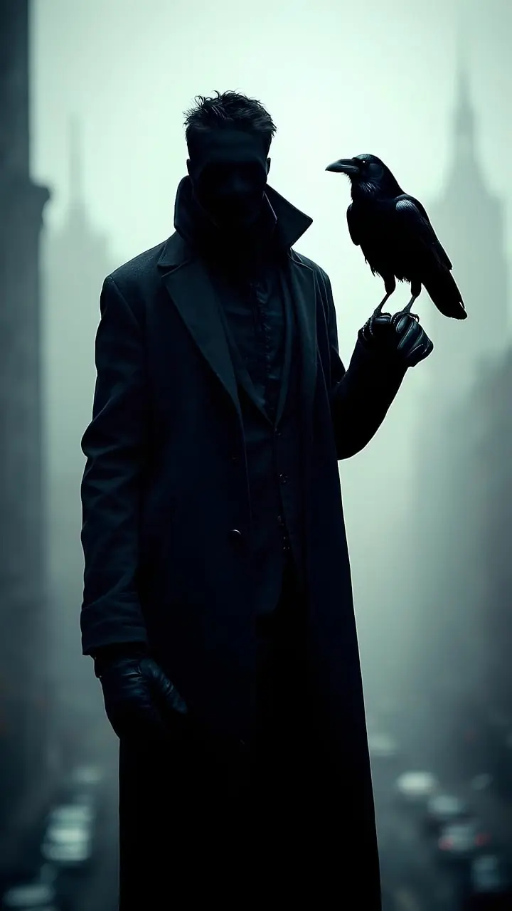
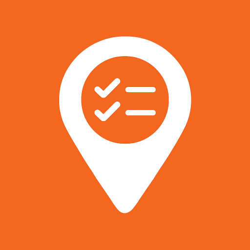
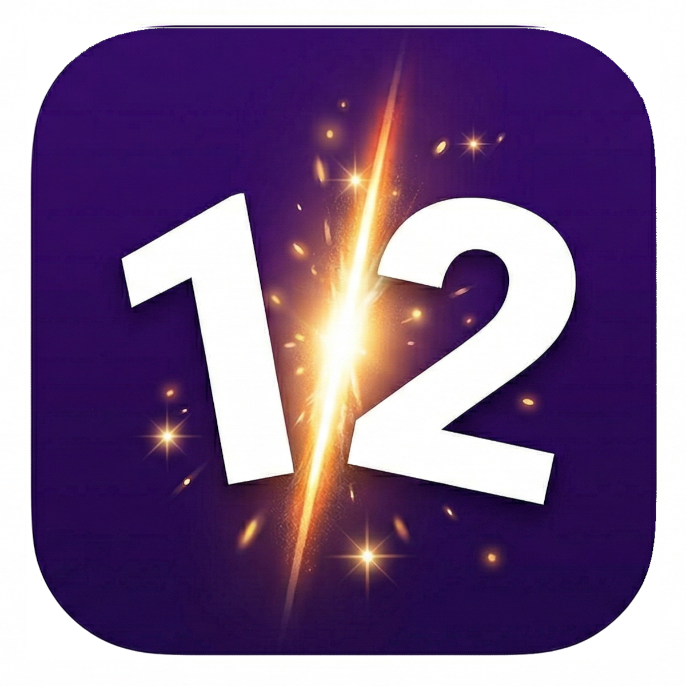

Laboratoriet
Under utforsking
Dette er stedet for eksperimenter. Fokuset er rettet mot hvordan kunstig intelligens, og hvem vet; kanskje mørke design-temaer vil skape unike brukeropplevelser. Flere konsepter er på tegnebrettet - kanskje det neste blir et spill. Nye prototyper vil publiseres her etter hvert som de tar form.
Checklist App
Pilotprosjekt • 2026

Mitt første fullskala læringsprosjekt. En digital sjekkliste-app designet for å mestre moderne Flutter-arkitektur, lokal databasehåndtering og skysynkronisering. Resultatet er et verktøy for struktur og produktivitet, bygget fra bunnen av.
Equation Builder
Spillprosjekt • 2026

Et raskt, intensivt tallspill der du skyver brikker, kombinerer tall og løser ligninger før brettet fylles opp. Bygget med fokus på flyt, progresjon og høy replay-verdi.